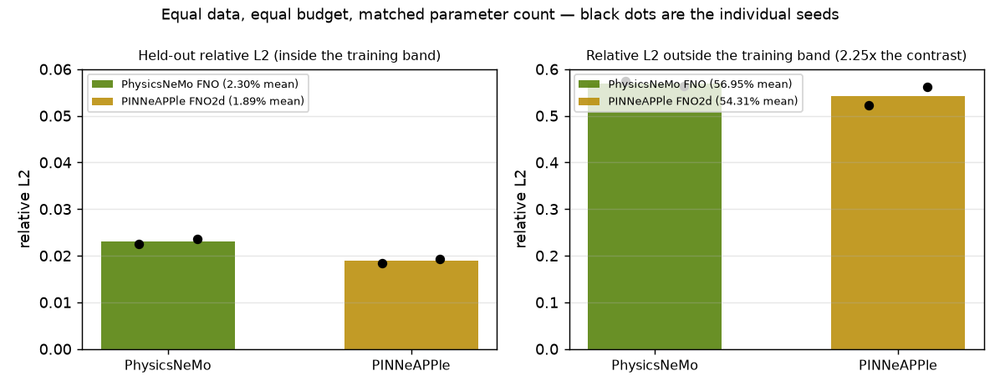
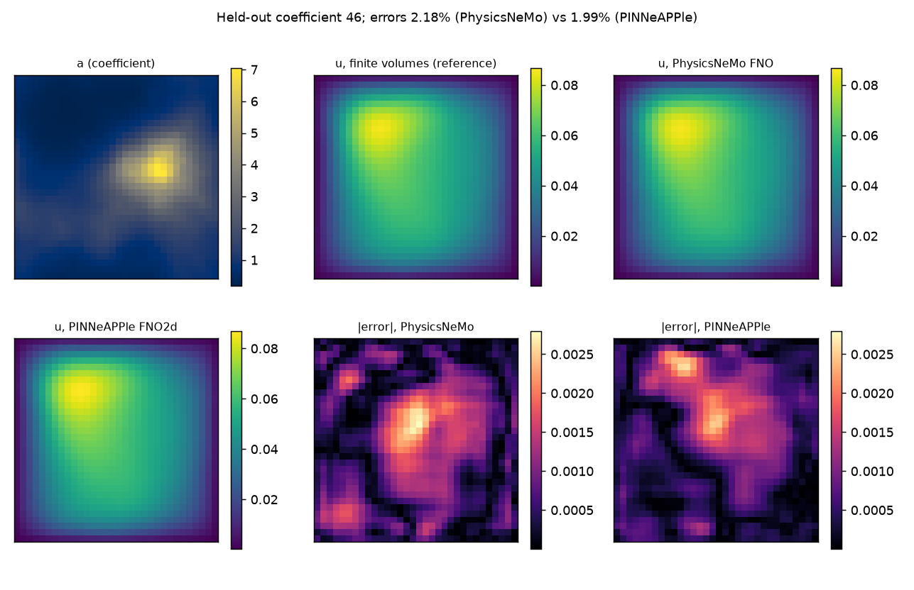
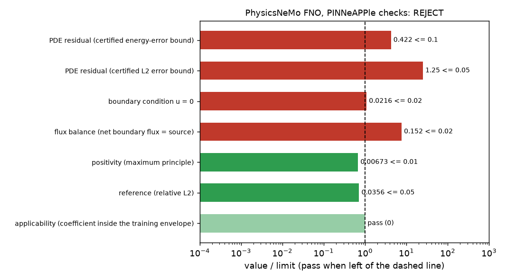
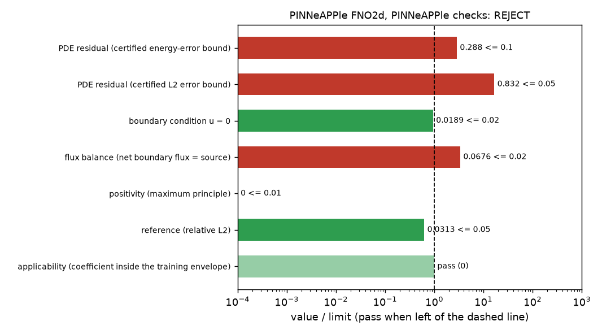
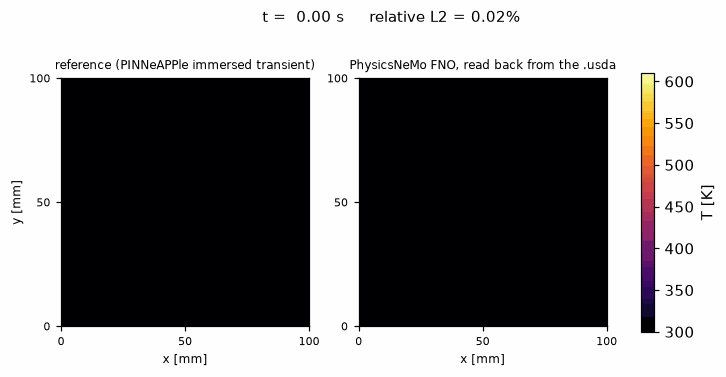
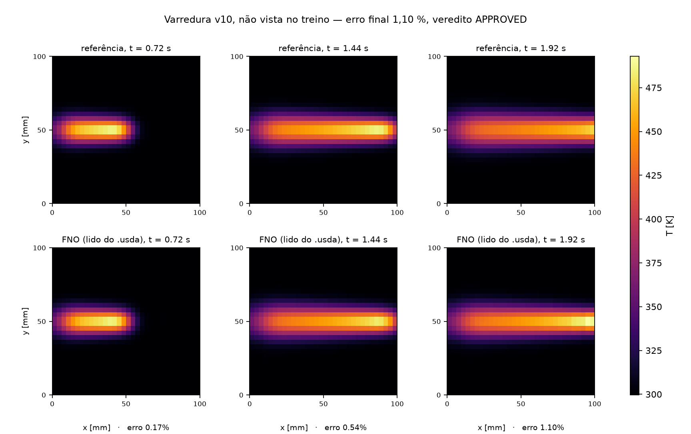
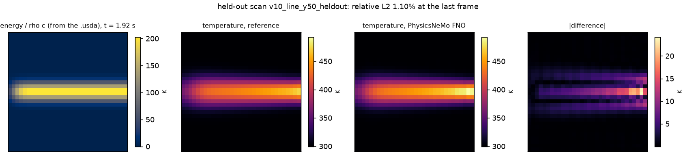
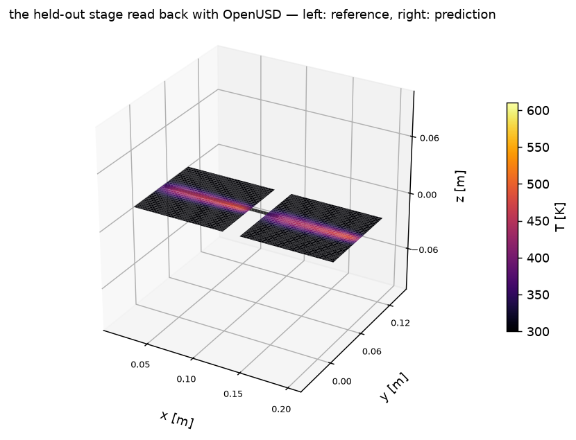
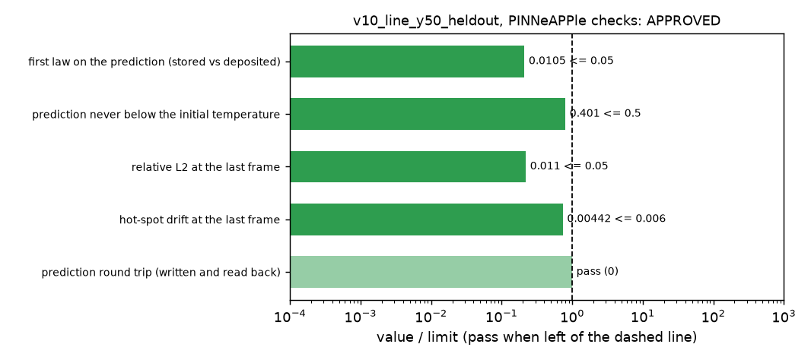
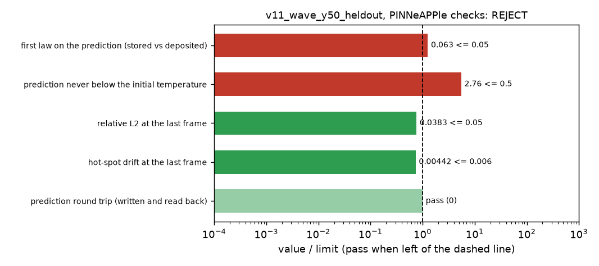

Demos rodadas · PhysicsNeMo · OpenUSD · camada de confiança
PINNeAPPle × NVIDIA
Duas demos que põem o ecossistema NVIDIA dentro da camada de confiança do PINNeAPPle — e mostram
onde cada um manda.
Nada aqui é mockup: os dois exemplos rodam, gravam figura, gravam summary.json e passam no CI.
O que eles mostram não é que "integra com PhysicsNeMo". É que a parte difícil de um operador neural não é
treinar — é decidir.
2 exemplos novos4 treinos igual-orçamento12 stages OpenUSD0 GPU — tudo em CPU2 vereditos gravados dentro do .usda
Demo 1 · PhysicsNeMo
Mesmo problema, mesmo dado, mesmo orçamento
O FNO do physicsnemo.models.fno e o FNO2d do próprio PINNeAPPle treinados nos mesmos
400 pares de -div(a grad u) = 1, com o mesmo número de passos de Adam, o mesmo batch, a mesma
semente e contagem de parâmetros casada em 1,1 % (2 366 305 contra 2 341 306). Depois, os dois passam pelo
mesmo portão: os checks de Darcy do PINNeAPPle, que não precisam do gabarito — limite certificado do resíduo,
condição de contorno, balanço de fluxo, positividade e envelope de coeficientes.
2,30 %PhysicsNeMo FNO — erro L2 fora da amostra, dentro da banda
1,89 %PINNeAPPle FNO2d — mesmo dado, mesmo orçamento
56,9 % / 54,3 %fora da banda de treino, os dois desabam
REJECTos dois, com 2 % de erro no campo

Dentro da banda: meio ponto de diferença. Fora: os dois perdem a mão, e só o envelope de
coeficientes avisa antes.

Amostra de validação mediana: coeficiente, volumes finitos (referência), as duas predições e os
dois mapas de erro, na mesma escala.

PhysicsNeMo: limite de energia certificado em 42,2 % (limite 10 %), L2 em 125 %, fluxo 15,2 %,
contorno 2,16 %.

PINNeAPPle: 28,8 %, 83 %, 6,8 % e um contorno que passa. Os dois terminam em REJECT — este é o
resultado interessante.
Um erro de campo de 2 % não é um erro de física de 2 %. Os limites certificados pelo resíduo
ficam de 15 a 54 vezes acima do erro real: são conservadores por construção. Os campos de volumes finitos
passam no mesmo portão (APPROVED), então o portão é rigoroso, não quebrado. É o tipo de coisa que só se
descobre rodando a checagem.
Demo 2 · OpenUSD
O arquivo é o dataset, a entrada e o recibo
Doze varreduras de uma fonte de calor móvel numa chapa de aço, resolvidas pelo solver imerso transiente do
PINNeAPPle — sem malha conforme da chapa. Cada varredura vira um stage OpenUSD com dois primvars na mesma
linha do tempo: a energia depositada até aquele quadro e a temperatura alcançada. A pasta de .usdaé o dataset: os pares de treino são lidos de volta dos arquivos com pxr. A predição de uma
varredura nunca vista volta para o mesmo arquivo, como segunda malha, com o veredito no prim.
APPROVEDvarredura do mesmo tipo, não vista: 1,10 % de erro, 1ª lei em 1,05 %
REJECTvarredura de outro tipo: 3,83 % — dentro da tolerância — mas 1ª lei em 6,3 %
0,0diferença entre o campo no arquivo e o que o solver calculou
45time samples no stage de validação: 2 malhas, 4 prims, 0 erro de validação


Referência e predição quadro a quadro, com o erro relativo no título — a mesma comparação que o
timeline do USD Composer reproduz (no PDF, três instantes em vez da animação).

Último quadro da varredura de validação. A energia vem do próprio .usda; a predição
do FNO fica a 4,4 mm do pico da referência.

O arquivo lido de volta com OpenUSD: à esquerda a referência, à direita a predição que foi escrita
nele. O que abre no USD Composer é o número em que a checagem rodou.

Varredura do mesmo tipo: tudo à esquerda da linha, veredito APPROVED.

Varredura ondulada: o erro de referência passa, a 1ª lei e a temperatura não. REJECT.
Este é o argumento a favor de carregar os números e o veredito no arquivo: o erro contra a
referência (3,83 %) diria "pode usar". A física, na mesma execução, disse que não — o campo previsto afunda
2,8 K abaixo da temperatura inicial, num problema em que só entra calor.
O resto do ecossistema
O que já roda e o que é próxima fronteira
Estas duas demos são a ponta do que o repositório já cobre. O mapa abaixo é o que está de pé hoje e o que
faz sentido em seguida, com o que cada peça compraria de verdade.
Peça NVIDIA
O que o PINNeAPPle faz com ela
Estado
O que compra
PhysicsNeMo
gera o dado, adapta o modelo, checa a física e assina o veredito
rodando · 8 exemplos
o operador sai da NVIDIA, a decisão sai daqui
OpenUSD
stage como saída, como dataset e como recibo; validação com UsdValidation
rodando · 7 exemplos
o resultado vira um arquivo revisável
USD Physics / PhysX
exporta corpos rígidos, colliders e materiais validados com o parser oficial
rodando
o que o Omniverse simula é o que foi verificado
USD BRep
CAD exato (NURBS) no stage, tesselação com erro de corda medido
rodando · 4 exemplos
geometria exata, não aproximada
Omniverse Kit (RTX)
abre o stage no viewport e captura a imagem
script pronto, não rodado
a cena com RTX — precisa de GPU
Isaac Sim / Newton
robô validado estruturalmente no simulador
Newton em CPU; Isaac com adapter
o mesmo gêmeo, no simulador da NVIDIA
NIM
serviços no formato NIM com veredito por resposta
local rodando; NIM com chave
servir com o mesmo portão
Cosmos
world model consistente com a física
adapter escrito, não rodado
vídeo sintético que obedece à física
Warp
levar solver imerso e volumes finitos para GPU
próxima
geração de dado 10–100× mais rápida
TensorRT / Triton
servir o operador exportado com os mesmos checks
próxima
latência de produção
PhysicsNeMo Datapipes
ler stages USD direto no carregador de dados
próxima
a versão GPU da demo 2
Extensão de Kit
painel do PINNeAPPle dentro do USD Composer: seleciona o prim, roda a checagem, pinta pela decisão
próxima
o revisor não sai do viewport
cuML / RAPIDS
incerteza e conformal em escala
próxima
UQ sobre ensembles grandes
NeMo / NIM (LLM)
pp.recommend apontando para endpoint NIM
próxima
problema → setup, on-premise
Para postar
Texto pronto, em português e em inglês
Quatro blocos: dois posts, cada um em duas línguas. Copie o que servir. As figuras para anexar são as das
seções acima; para um post só, a d20_timeline.gif e a d19_head_to_head.png são as que
carregam o argumento sozinhas.
Post 1 · PhysicsNeMo · PT
Coloquei o FNO do PhysicsNeMo (NVIDIA) e o FNO do PINNeAPPle no mesmo problema de Darcy: mesmos 400 pares de treino, mesmo orçamento de computação, contagem de parâmetros casada em 1,1%.
Resultado dentro da banda: 2,30% de erro contra 1,89%. Meio ponto. Os dois tomam REJECT nos checks de física — com 2% de erro no campo.
Esse é o ponto. O limite certificado pelo resíduo dá 42% no PhysicsNeMo e 29% no nosso, contra um limite de 10%. Um erro de 2% no campo não é um erro de 2% na física, e é a física que decide se o operador pode ir para produção.
Fora da banda de treino os dois desabam para ~55%, e o envelope de coeficientes aponta cada amostra. Nenhum dos dois extrapola em contraste — o que muda o jogo é saber disso antes, não depois.
Tudo em CPU, num laptop, com as checagens no CI. Código no exemplo 19 de examples/nvidia.
#PhysicsAI #PINN #OpenUSD #HPC
Post 1 · PhysicsNeMo · EN
I put NVIDIA's PhysicsNeMo FNO and PINNeAPPle's own FNO on the same Darcy problem: same 400 training pairs, same compute budget, parameter counts matched to 1.1%.
In-band: 2.30% relative L2 against 1.89%. Half a point. Both come back REJECT from the physics checks, at a 2% field error.
That is the point. The certified bound from the residual reads 42% for PhysicsNeMo and 29% for ours, against a 10% limit. A 2% field error is not a 2% physics error, and the physics is what decides whether an operator ships.
Outside the training band both collapse to ~55%, and the coefficient envelope flags every sample. Neither extrapolates in contrast — knowing that early is the whole game.
All on CPU, on a laptop, with the checks in CI. Code in example 19 under examples/nvidia.
#PhysicsAI #NeuralOperators #HPC
Post 2 · OpenUSD · PT
Um arquivo .usda pode ser o dataset, a entrada do modelo e o recibo — ao mesmo tempo.
Montei uma demo em que 12 varreduras de uma fonte de calor numa chapa de aço são resolvidas pelo solver imerso do PINNeAPPle (sem malha conforme) e gravadas como stages OpenUSD. Cada stage carrega dois primvars na mesma linha do tempo: a energia depositada e a temperatura.
Os pares de treino são lidos de volta dos arquivos com pxr. O FNO do PhysicsNeMo aprende energia → temperatura com 90 pares. A predição de uma varredura que ele nunca viu volta para o mesmo arquivo, como segunda malha, com o veredito no prim.
Numa varredura do mesmo tipo: 1,10% de erro, primeira lei em 1,05%, APPROVED.
Numa varredura ondulada, de outro tipo: 3,83% de erro — dentro da tolerância de 5% — mas a primeira lei fecha em 6,3% e o campo afunda 2,8 K abaixo da inicial. REJECT.
O erro contra a referência teria liberado. A física não deixou. E o veredito está escrito dentro do arquivo, não num notebook.
#OpenUSD #Omniverse #PhysicsAI
Post 2 · OpenUSD · EN
A .usda file can be the dataset, the model's input and the receipt — all at once.
In this demo, 12 scans of a moving heat source on a steel plate are solved by PINNeAPPle's immersed solver (no conforming mesh) and written as OpenUSD stages. Each stage carries two primvars on the same timeline: deposited energy and temperature.
The training pairs are read back out of the files with pxr. A PhysicsNeMo FNO learns energy → temperature from 90 pairs. The prediction for a scan it has never seen goes back into that same file as a second mesh, with the verdict on the prim.
Same-kind scan: 1.10% error, first law at 1.05%, APPROVED.
Wavy scan, different kind: 3.83% — inside the 5% tolerance — but the first law closes at 6.3% and the field dips 2.8 K below the initial temperature. REJECT.
The reference error would have let it through. The physics did not. And the verdict lives in the file, not in a notebook.
#OpenUSD #Omniverse #PhysicsAI
Os dois instalam com pip install nvidia-physicsnemo usd-core e rodam em CPU.
Cada um tem --smoke para o CI em segundos, experiment.json com métricas e checagens, e
um README com os números desta execução e o que não rodou aqui.